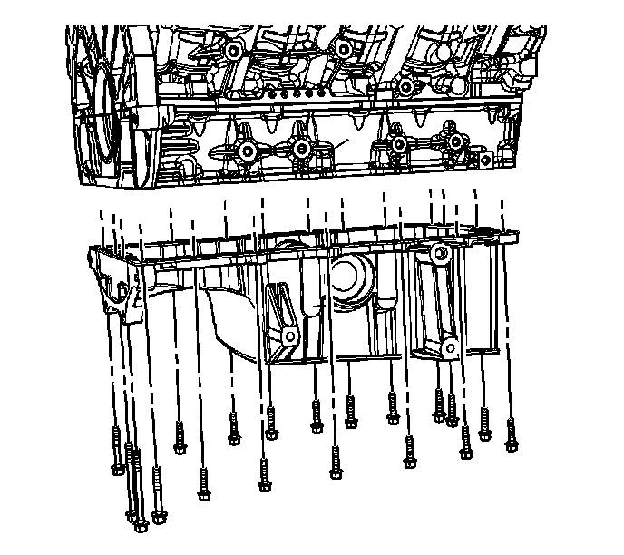
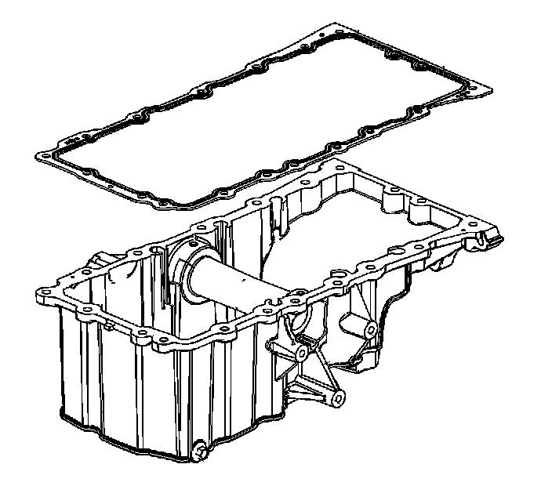
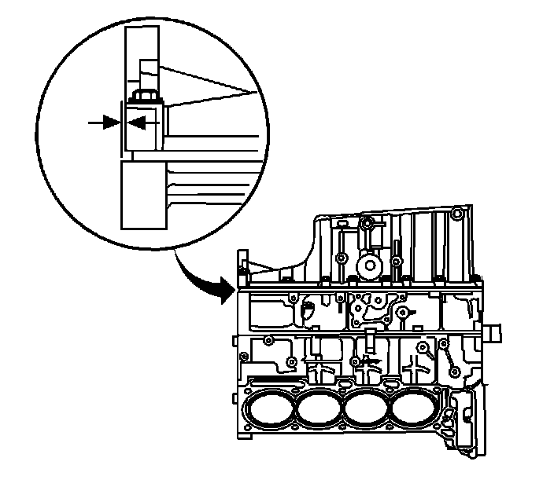
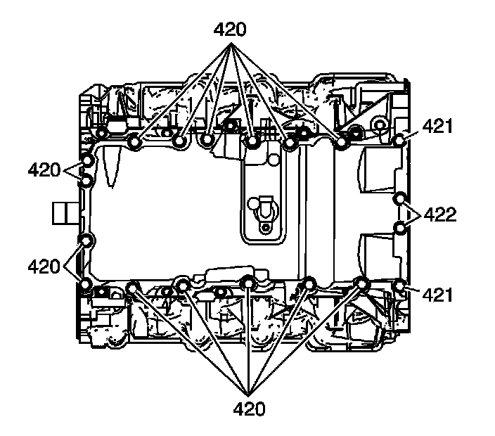
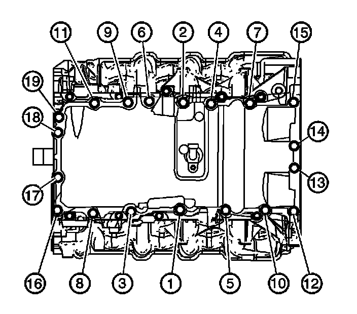

Oil Pan: Service and Repair
Oil Pan Replacement
Removal Procedure

1. Install the engine support fixture. Refer to Engine Support Fixture (Engine Support Fixture) .
2. Drain the engine oil. Refer to Engine Oil and Oil Filter Replacement (Service and Repair) .
3. Remove the front frame. Refer to Front Frame Replacement (Front Frame Replacement) .
4. Remove the front differential carrier, if equipped. Refer to Differential Carrier Assembly Replacement (Service and Repair) .
5. Disconnect the electrical connector from the engine oil level sensor.
6. Remove the engine oil level sensor from the oil pan.

7. Remove the oil pan bolts.
Important: The oil pan gasket is reusable unless damaged. Do not remove the gasket from the oil pan unless replacement is required.
8. Remove the oil pan.
9. Drill out the oil pan gasket rivets.

10. Remove and discard the oil pan gasket.
11. Clean and inspect the oil pan. Refer to Oil Pan Cleaning and Inspection (Overhaul) .
Installation Procedure
1. If required, install a new oil pan gasket. It is not necessary to rivet the new oil pan gasket to the oil pan.
2. Position the oil pan onto the lower crankcase.

3. The oil pan must be held flush to 0.50 mm (0.020 in) forward of the rear face of the engine block.

4. Place oil pan fasteners in location as shown:
* Short length bolt (420)
* Medium length bolt (421)
* Long length bolt (422)

Notice: Refer to Fastener Notice (Fastener Notice) .
5. Install the oil pan bolts. Tighten the bolts in the sequence shown.
1. First pass-Tighten the bolts to 15 N.m (11 lb ft).
2. Final pass-Tighten the bolts to 25 N.m (18 lb ft).
6. Install the engine oil level sensor into the oil pan.
Tighten the sensor to 10 N.m (89 lb in).
7. Connect the electrical connector to the engine oil level sensor.
8. Install the front differential carrier, if equipped. Refer to Differential Carrier Assembly Replacement (Service and Repair) .
9. Install the front frame. Refer to Front Frame Replacement (Front Frame Replacement) .
10. Fill the engine oil. Refer to Engine Oil and Oil Filter Replacement (Service and Repair) .
11. Remove the engine support fixture. Refer to Engine Support Fixture (Engine Support Fixture) .
12. Inspect for oil leaks after engine start up.